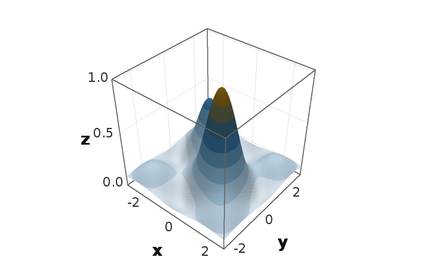

3D-Diagramme mit eigenem Tiefenpuffer – ohne OpenGL, ohne Orson Charts
Funktionsübersicht für die Präsentation des envisionz-Frameworks, Stand 28.09.2026. Eigene Kamera, eigene Matrizen, eigener Rasterizer mit Tiefenpuffer; darauf Achsen, Legenden und sechs Diagrammarten, Stile und eine Bedienleiste aus Einstellkarten für Swing. Je Verfahren: Zweck, Methoden, Einsatz im Framework, Anwendungen, Beispiele. Die Beispiele sind gekürzt.

Surface3DFactory und dem Tiefenpuffer gezeichnet (Gitter 61 × 61, neun Farbbänder).Grundsätze des Moduls
Framebuffer, eigene Mat4, eigene Camera. Abhängig nur von framework-swing (Sprachbündel) und framework-math (Catmull-Rom-Spline).Die Zeichenmaschine envisionz.chart3d · .render · .scene
ZBufferRenderer, Framebuffer, Scene3D, Camera, Mat4, Vec3
Je Bild: Ecken transformieren, an der Nahebene beschneiden, in Kacheln einsortieren, Kacheln parallel füllen. Kantenglättung durch Überabtastung (1 bis 4). Gouraud-Schattierung über Eckennormalen mit Knickwinkel, Nebel, Kantenbetonung, Umrisse, Iso-Linien an Bandgrenzen, eine Schnittebene und Trefferabfrage je Bildpunkt. Die Kamera kreist um ein Ziel, perspektivisch oder orthogonal. Hintergrund, Formeln und Pseudocode →
Methoden
ZBufferRenderer.render(szene, kamera, breite, hoehe),itemAt(x, y, toleranz)setSupersampling,setGouraud,setKnickwinkel,setValueScale,setIsoLines,setDepthCue,setEdges,setClipPlane(nx, ny, nz, d)Scene3D:addTriangles(tris, farben|eckwerte),addQuad,addPolyline,addPoints,kennung(k)Camera.setOrbit(theta, phi, rho),orbit,zoom,pan,setOrthographic;Mat4.lookAt,perspective,orthographic
Eingesetzt in
Wofür
Eigene 3D-Szenen außerhalb der Diagrammform; native-image-tauglich, weil nur Java2D und Rechnung.
Beispiel – eine Szene direkt rastern
Scene3D s = new Scene3D();
s.addTriangles(tris, eckwerte); // je Zeile 9 Koordinaten bzw. 3 Werte
ZBufferRenderer r = new ZBufferRenderer();
r.setGouraud(true);
r.setValueScale(ColorScale.of(0, 1, t -> Color.getHSBColor((float) (0.7 * (1 - t)), 1f, 1f)));
Camera cam = new Camera();
cam.setOrbit(Math.toRadians(-122), Math.toRadians(70.6), 3.0);
BufferedImage bild = r.render(s, cam, 800, 600);Diagramm, Achsen, Farbskala envisionz.chart3d.chart · envisionz.chart3d.color
Chart3DView, Axis3D, ColorScale
Das Diagramm: Nutzgeometrie, drei Achsen, Titel, Untertitel, Farbskalen- und Kategorienlegende in wählbarer Lage, Marken und Bereiche an den Achsen, Wände und Gitter, gleiche Maßstäbe auf Wunsch. Zusatzgeometrie (Ebenen, Linien, Splines, Punkte) lässt sich hinzufügen. uebernehmenVon überträgt die Darstellung eines Diagramms auf ein anderes, ohne Daten, Achsenbereiche und Farbskala mitzunehmen. Hintergrund, Formeln und Pseudocode →
Methoden
new Chart3DView(szene, xAchse, yAchse, zAchse),render(breite, hoehe),fitToView(b, h),itemAt(px, py, tol)setTitle,setSubtitle,setLegend(skala[, titel]),setLegendPosition,setCategoryLegend,setEqualAspectaddLabel,addPlane(achse, wert, farbe),addPolyline,addSpline,addPoints,addSurface,uebernehmenVon(andere)Axis3D:setRange,setLogarithmic,setReversed,setTicks,marke,bereich;ColorScale.of(lo, hi, verlauf),banded(...)
Eingesetzt in
Wofür
Kennfelder und Messwolken im Raum mit Beschriftung, Legende und Markierungen, als Bild oder im Fenster.
Beispiel – Betriebspunkt markieren und rendern
view.addLabel(w2, pr, eta, "Auslegungspunkt", Color.RED);
view.addPlane(2, 0.85, new Color(0, 0, 255, 60)); // Ebene z = 0,85
BufferedImage bild = view.render(1200, 900);Fabriken und Datenquellen envisionz.chart3d.chart · envisionz.chart3d.data
Surface3DFactory, Scatter3DFactory, Line3DFactory, Volume3DFactory, Category3DFactory, Pie3DFactory
Sechs Diagrammarten, jede mit einem Weg über Felder und einem über eine Datenquelle – ein Zeichenweg, kein zweiter. Die Fläche übergibt Werte je Ecke, Streupunkte werden je Punkt gefärbt, Linien je Streckenstück aus dem Wert in dessen Mitte; Säulen stehen mit umgekehrter Kategorienachse, damit die größte Reihe hinten steht; der Kreis trägt Prozente in der Legende. Volumen nimmt Schalen mit Farbe und Deckkraft.
Methoden
Surface3DFactory.create(xv, yv, gitterZ, nI, nJ, titel, xL, yL, zL, skala, umriss),create(gitterquelle, …)Scatter3DFactory.create(x, y, z, werte, groesse, farbe, titel, …, skala),Line3DFactory.create(reihen, namen, farben, …)Volume3DFactory.create(List<Schale>, …),createBanded(tris, werte, …)Category3DFactory.create(werte, reihen, spalten, …),Pie3DFactory.create(werte, namen, farben, …)Felder.punkte(x, y, z, werte, name),gitter(xv, yv, f, nI, nJ),bahnen(...),kategorien(...)
Eingesetzt in
Wofür
Wirkungsgradflächen, Messwolken, Bahnen im Raum, Iso-Flächen aus Punktwolken, Säulen- und Kreisdiagramme in 3D.
Beispiel – Fläche aus einem Gitter
ColorScale skala = ColorScale.banded(zMin, zMax, 10, t -> Color.getHSBColor((float) (0.7 * (1 - t)), 1f, 1f));
Chart3DView v = Surface3DFactory.create(xv, yv, z, nI, nJ, "Wirkungsgrad", "W2", "PR", "η", skala, false);Stile envisionz.chart3d.stil
Stil – ein Satz Darstellungsangaben zum Anwenden
Hintergrund, Text- und Linienfarben, Schriften, Wände, Gitter, Textlage, Legendenlage, Schattierung, Überabtastung, Nebel und Kanten, Reihenfarben – als unveränderlicher Satz mit mit…-Ableitungen. Vier Vorlagen, darunter eine, die aussieht wie Orson Charts.
Methoden
Stil.hell(),dunkel(),druck(),wieOrson()mitHintergrund,mitSchriften,mitWaenden,mitGitter,mitSchattierung(weich, knick, grund),mitUeberabtastung,mitReihenfarbenanwenden(view),reihenfarbe(i),reihenfarben(n)
Eingesetzt in
Wofür
Einheitliches Aussehen für Bildschirm, Druck und Präsentation mit einem Aufruf.
Beispiel – Druckfassung mit Gitter
Stil.druck().mitGitter(true).mitUeberabtastung(3).anwenden(view);Bedienung in Swing envisionz.chart3d.swing
Chart3DPanel, Diagrammtafel, Einstellrail und die Einstellkarten
Das Panel dreht, zoomt und verschiebt mit der Maus, rendert beim Ziehen gröber und im Stillstand fein, meldet Treffer und zeigt Kurzhilfen. Die Diagrammtafel ordnet mehrere Diagramme in Spalten, mit gekoppelter Kamera und einem Stil für alle. Die Einstellungen liegen als Karten in einer senkrechten Leiste: Ansicht, Achsen, Legende, Titel, Marken, Thema; Farbwahl lässt die Anwendung ihren eigenen Farbdialog einsetzen.
Methoden
new Chart3DPanel(view),setChart(view[, einpassen]),datenGeaendert(),setTrefferhorcher,setSupersampling(ruhe, ziehen)new Diagrammtafel(spalten),hinzufuegen(view),setKamerakopplung,stilFuerAlle(stil),mitBedienflaeche(tafel)Einstellrail.vollstaendig(panel, tafel),new Einstellrail(karten…),nachziehen()Ansichtskarte,Achsenkarte,Legendenkarte,Titelkarte,Markenkarte,Themenkarte;Einstellkarte.setFarbwahl(quelle)
Eingesetzt in
Wofür
3D-Ansichten in den Anwendungen, eingestellt über Karten statt Dialogfenster.
Beispiel – Diagramm mit vollständiger Einstellleiste
Chart3DPanel panel = new Chart3DPanel(view);
Einstellrail leiste = Einstellrail.vollstaendig(panel, null); // ohne Tafel
fenster.add(panel, BorderLayout.CENTER);
fenster.add(leiste, BorderLayout.EAST);Diagrammtafel und Einstellrail werden heute nur in den Vorführprogrammen und Proben benutzt; app-charts setzt die Karten einzeln ein.Belege und Werkzeuge envisionz.chart3d.proof · cmd.chart3d
ProofScenes, Chart3DProof, Chart3DTypes, Chart3DViews, Chart3DPruefung, Chart3DDemo, Kartenmass
Belegszenen mit bekannter Antwort (Dreieck, Würfel, sich kreuzende Ebenen, Fläche, Bahn im Kasten, Volumen) und Werkzeuge, die daraus Belegbilder nach docs/ schreiben: die kategorialen und punktbasierten Diagrammarten, Kontaktbögen mit vollem Umlauf und zunehmendem Zoom, eine Sichtprüfung der Malerei und eine Vorführung. Kartenmass misst die Breite der Einstellkarten. Belegbilder muss ein Mensch ansehen; sie ersetzen keine Probe.
Methoden
ProofScenes.singleTriangle(),cube(),crossingPlanes(),surface(n),pathInBox(),volumeTriangles(n)Chart3DProof.run(args),Chart3DTypes.run(args),Chart3DViews.run(args)– Rückgabewert als ErgebnisChart3DPruefung.main,Chart3DDemo.main,Kartenmass.main
Eingesetzt in
Wofür
Belegbilder für Dokumentation und Vergleich; schnelle Sichtprüfung nach Änderungen am Rasterizer.
Einsatzmatrix im Framework
Welche Module welche Teile heute nutzen, im Quelltext gezählt (ohne Proben).
| Modul | Maschine / Szene | Diagramm & Achsen | Farbskala | Fabriken / Datenquellen | Stil | Swing | Wofür |
|---|---|---|---|---|---|---|---|
| framework-chart | ● | ● | ● | ● | 3D-Fabriken mit gleichen Aufrufen wie früher, Datenbrücke zu JFreeChart | ||
| app-charts | ● | ● | ● | 3D-Diagramme mit Einstellkarten, Zustand speichern | |||
| app-maps | ● | ● | Raumansicht der Kennfelder |
Chart3DView, das Panel und die Karten. Ein Vergleich mit Orson Charts (Messung, Befunde je Diagrammart) liegt unter docs/vergleich/.